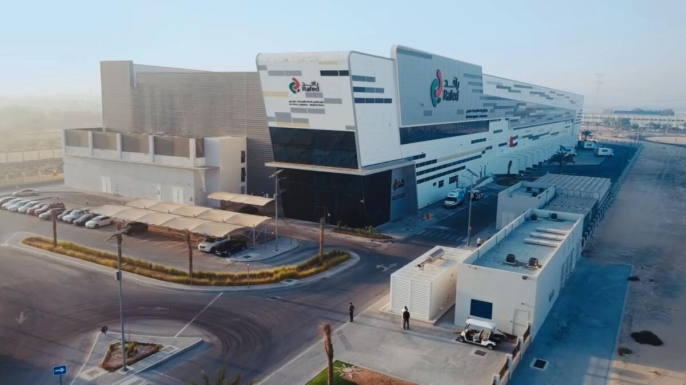

Innovent deployed Innfini as the enterprise digital-operations platform for AD Ports Group — delivering complete visibility across warehousing, logistics and terminal operations, and unifying every system under one platform.

Innovent deployed Innfini as the enterprise digital-operations platform for AD Ports Group — delivering complete visibility across warehousing, logistics and terminal operations and unifying every system under one platform.
Full visibility across all storage locations, inventory movement, picking, dispatch and stock control.
Continuous temperature and condition monitoring via deployed temperature loggers and IoT sensors.
Integrated physical security and building management for site-wide situational awareness.
Self-service scheduling, delivery booking, dispatch coordination and document exchange.
Vehicle telemetry, GPS tracking and delivery orchestration across operational zones.
Configurable map-based reporting, MQTT integration and complex-event-processing rules driving automation across terminal operations.
Port-wide visibility, end-to-end logistics and 24/7 cold-chain integrity — one operating layer across every site, every supplier, every container.
Our solutions team will walk your environment, your systems, and your operators' day — and show what an Innfini deployment looks like in your context.